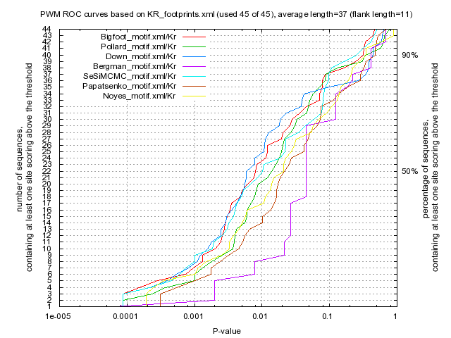

Kulakovskiy I.V., Favorov A.F., Makeev V.J. (2009) Motif discovery and motif finding from genome-mapped DNase footprint data. Bioinformatics 25(18): 2318-2325.
<up> DMMPMM motif KR comparison [dmmpmm_compare_html]
|  |
motif alignment
motif similarity
|
Bigfoot |
Pollard |
Down |
Bergman |
SeSiMCMC |
Papatsenko |
Noyes |
| Bigfoot |
1.0 |
0.5386 |
0.6715 |
0.321 |
0.7935 |
0.4566 |
0.4386 |
| Pollard |
0.5386 |
1.0 |
0.4484 |
0.3902 |
0.5616 |
0.4792 |
0.4587 |
| Down |
0.6715 |
0.4484 |
1.0 |
0.2835 |
0.6109 |
0.4186 |
0.4488 |
| Bergman |
0.321 |
0.3902 |
0.2835 |
1.0 |
0.3333 |
0.263 |
0.2445 |
| SeSiMCMC |
0.7935 |
0.5616 |
0.6109 |
0.3333 |
1.0 |
0.4559 |
0.4445 |
| Papatsenko |
0.4566 |
0.4792 |
0.4186 |
0.263 |
0.4559 |
1.0 |
0.3791 |
| Noyes |
0.4386 |
0.4587 |
0.4488 |
0.2445 |
0.4445 |
0.3791 |
1.0 |
|